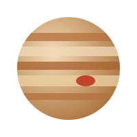
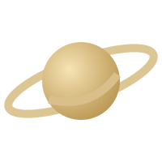
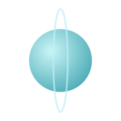
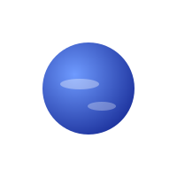

🪐 Күн жүйесінің планеталары
Басты бет |
Планеталар |
Ғарышкерлер
Жер тобындағы планеталар
- Меркурий – Күнге ең жақын және ең кіші планета.

- Шолпан – ең ыстық планета, қалың атмосферасы бар.

- Жер – біз өмір сүретін, тіршілік бар жалғыз белгілі планета.
- Марс – «қызыл планета», беті қызыл шаңмен көмкерілген.

Алып планеталар
- Юпитер – ең үлкен планета.

- Сатурн – әдемі сақиналарымен танымал.

- Уран – бүйірінен жатып айналады.

- Нептун – Күннен ең алыс планета, желі өте қатты.

Күннен қашықтығы бойынша реттілік

- Меркурий
- Шолпан
- Жер
- Марс
- Юпитер
- Сатурн
- Уран
- Нептун
Басты бетке оралу
© 2026 Ғарыш әлемі